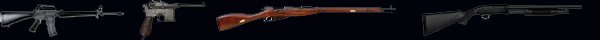
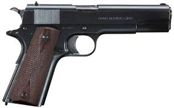
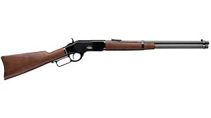
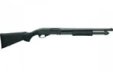
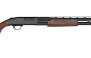
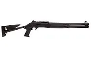
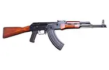
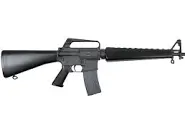
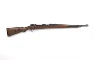

lead world es una pagina para todos los entuciastas
de las armas y la historia de estas mismas

El inicio de todo
Las armas de fuego han evolucionado desde su invención en China en el siglo IX,
cuando se descubrió la pólvora y se crearon los primeros cañones de mano y lanza-fuegos,
hasta convertirse en sofisticadas armas modernas.
Durante el siglo XIV, llegaron a Europa, dando paso a los primeros arcabuces y mosquetes ,
que se perfeccionaron con la llave de chispa en los siglos XVI-XVIII.
La Revolución Industrial permitió la producción en masa y la creación de armas más eficientes,
como los revólveres y rifles de repetición,
mientras que el siglo XX vio el auge de las armas automáticas, como el AK-47 y el M16,
impulsadas por las guerras mundiales. En la actualidad, el desarrollo de materiales más ligeros y
tecnología avanzada ha dado lugar a armas inteligentes con reconocimiento biométrico y sistemas
automatizados de puntería, consolidando su impacto en la guerra, la seguridad y la sociedad
a lo largo de la historia.
Historia de las Pistolas
Las primeras armas de fuego surgieron en el siglo XIV, tras la invención de la pólvora en China y su llegada a Europa. Estas armas iniciales eran conocidas como bombardas y consistían en tubos metálicos que disparaban proyectiles mediante la ignición de pólvora.
Colt M1911

Origen: Estados Unidos
Año de fabricación: 1911
Calibre: .45 ACP
Importancia: Diseñada por John Moses Browning,
esta pistola semiautomática ha sido utilizada por el ejército estadounidense y otras fuerzas durante más de un siglo. Su fiabilidad
y potencia la convierten en una de las armas más icónicas de la historia.
Glock 17
Origen: Austria
Año de fabricación: 1982
Calibre: 9x19mm parabelium
Importancia:
Revolucionó la industria con su diseño polimérico y liviano. Es ampliamente utilizada
por fuerzas policiales y militares de todo el mundo debido a su alta capacidad de
cargador, durabilidad y facilidad de uso.
Winchester 1987

Origen: Estados Unidos
Año de fabricación: 1897
Calibre: 12 y 16
Importancia:
Diseñada por John Moses Browning, esta escopeta fue ampliamente utilizada en la Primera
y Segunda Guerra Mundial. Su acción de corredera y capacidad de combate cercano la
hicieron muy efectiva en el campo de batalla.
Remington 870

Origen: Estados Unidos
Año de fabricación: 1950
Calibre: 12, 16, 28, 20 y .410
Importancia:
Una de las escopetas de corredera más vendidas y confiables. Utilizada tanto en fuerzas
policiales, militares como en caza y defensa personal, gracias a su diseño robusto y
facilidad de personalización.
Mossberg 500

Origen: Estados Unidos
Año de fabricación: 1961
Calibre: 12, 20 y .410
Importancia:
Popular entre civiles, militares y policías, esta escopeta de acción de bombeo destaca por su versatilidad,
confiabilidad y bajo costo. Ha sido utilizada en diversas operaciones militares.
Benelli M4 (M1014)

Origen: Italia
Año de fabricación: 1999
Calibre: 12
Importancia:
Adoptada por el Cuerpo de Marines de EE.UU., esta escopeta semiautomática destaca por su sistema de gases
Auto-Regulated Gas-Operated (ARGO), que le permite un rápido disparo y gran fiabilidad en combate.
AK-47

Origen: Unión Soviética
Año de fabricación: 1947
Calibre: 7.62×39 mm
Importancia:
Uno de los rifles de asalto más icónicos y utilizados en el mundo. Diseñado por Mijaíl Kaláshnikov,
es famoso por su resistencia, facilidad de uso y bajo costo de producción.
M16

Origen: Estados Unidos
Año de fabricación: 1963
Calibre: 5.56×45 mm NATO
Importancia:
Rifle estándar del ejército de EE.UU. durante décadas, utilizado en la Guerra de Vietnam y otros conflictos.
Conocido por su precisión y diseño modular.
Mauser Kar 98k

Origen: Alemania
Año de fabricación: 1935
Calibre: 7.92×57 mm Mauser
Importancia:
Rifle de cerrojo utilizado por la Alemania nazi en la Segunda Guerra Mundial. Su precisión y fiabilidad
lo convirtieron en una de las mejores armas de su tiempo.